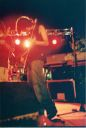

Récits Légendes de Kirin Tor Personnages Célébrités Guildes
Outils Calendrier Calendrier Illustré Mod d'interface
Informations Historiens FAQ Liens Crédits
Les légendes de Kirin Tor
Egide
Mail : quentin_inscene@hotmail.frSite : http://inscene.free.fr
MSN : quentin_inscene@hotmail.fr
==> Afficher les personnages de Egide
Khinan
 Age : 25
Age : 25
Sexe : Homme
Race : Humain
Faction : Alliance
Formation : Paladin
Description : Elevé dans les plaines dorées du Westfall, Khinan Frostsoul fut effondré lorsqu'il apprit que ces terres furent bafouées et ses fermiers chassés, par une confrérie de voleurs et d'assassins, les Défias.
Khinan a toujours été un garçon mystérieux, mélancolique... Constamment tiraillé entre sa compassion, sa foi en la Lumière, et un profond dégoût pour les évènements qui obscurcissent les terres de Lordaeron, provoquant en lui une haine immense... Il est bien décidé à faire cesser la guerre, même si dans le même temps, tuer provoque en lui une certaine satisfaction...
Plus d'infos sur Khinan >>>
Lire les 14 récits de Khinan >>>
Cinitia
Age : 17Sexe : Femme
Race : Humain
Faction : Alliance
Formation : Prêtre
Description : Cinitia Frostsoul, est la jeune soeur du noble paladin Khinan Frostsoul. Enfants orphelins, l'aîné s'est toujours occupé de la jeune fille. Il est clair que devenir prêtresse est plus une fascination, une admiration pour son frère qu'une vocation. Mais qu'importe, même si elle reste parfois insensible aux dogmes établis par sa religion, elle reste fidèle aux principes qu'on lui a inculqués, à savoir toujours aider son prochain, être généreuse... Sa fascination l'a conduite à essayer de retrouver son frère, car ce n'est pas un secret pour elle, il a beaucoup voyagé, et il est bien difficile de suivre ses traces...
Plus d'infos sur Cinitia >>>
Selthinea
Age : 200 ans environSexe : Femme
Race : Elfe
Faction : Alliance
Formation : Druide
Plus d'infos sur Selthinea >>>
Proltan
Age : 43Sexe : Homme
Race : Nain
Faction : Alliance
Formation : Chasseur
Description : Roublard, borné, barbu.
Plus d'infos sur Proltan >>>
==> Voir la galerie d'images de Egide